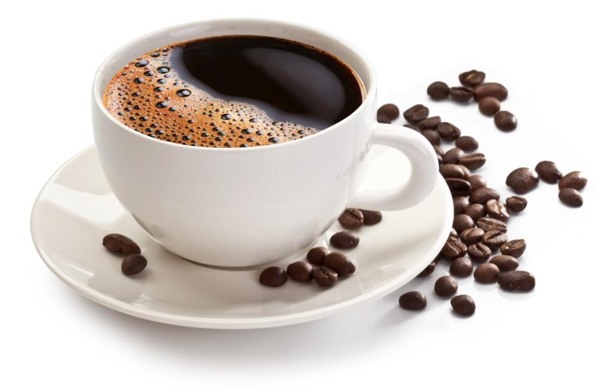

Hit the gym
KIEDY PIĆ KAWĘ, PRZED CZY PO TRENINGU?

Stymulujące działanie kofeiny, tak pożądane w sytuacjach, kiedy koniecznie trzeba dodać sobie energii, spowodowało umieszczenie kawy na liście zabronionych dla sportowców środków dopingujących. Jak kawa wpływa na organizm osoby uprawiającej sport i czy warto skusić się filiżankę "małej czarnej" przed treningiem?
Jak wynika z najnowszych badań, właściwości kawy, obok pozytywnego wpływu na pracę intelektualną, znajdują zastosowanie również w przypadku aktywności fizycznej. Zwiększenie przepływu krwi do mięśni i serca ma znaczenie szczególnie w przypadku wysiłku wytrzymałościowego. W jaki sposób kofeina wpływa na wydolność naszego organizmu?
Kawa przed treningiem: pić czy nie pić?
W przypadku osób uprawiających sport regularnie, kluczową kwestią w prawidłowym funkcjonowaniu gospodarki energetycznej organizmu jest szybkie odbudowanie zasobów glikogenu pomiędzy treningami. Kofeina pełni w tej sytuacji podwójną funkcję. Powodując wzrost stężenia wolnych kwasów tłuszczowych, wpływa na oszczędzanie glikogenu zawartego w mięśniach. Przyjmowana bezpośrednio przed rozpoczęciem aktywności, zwiększa natomiast poziom glukozy, z której jest on syntezowany.
Ile czasu przed treningiem wypić kawę?
Kofeina dostarczana w postaci kawy wchłaniana jest niezwykle szybko. W przypadku długotrwałej aktywności odczuwalne efekty uzyskamy, pijąc kawę ok. 15-20 minut przed treningiem. Przy krótszym wysiłku czas ten ulega wydłużeniu do 45 minut – tłumaczy Joanna Sobyra, ekspert Segafredo Zanetti. – Powinniśmy jednak pamiętać, że przyjmując dawkę kofeiny należy zadbać o regularne oraz prawidłowe nawadnianie organizmu niwelujące skutki moczopędnego działania napoju – dodaje.
Działanie kofeiny na organizm
Przyjęcie dawki ok. 5 mg kofeiny na kilogram masy ciała powoduje rozszerzanie naczyń krwionośnych oraz zwiększenie stężenia adrenaliny we krwi. Ma to szczególne znaczenie w przypadku aktywności wymagających wysokiej wytrzymałości i odporności organizmu, takich jak maraton lub wyścig rowerowy.
Kofeina, oddziałując na układ nerwowy, zwiększa również wydolność organizmu oraz motywację do dalszego wysiłku. W efekcie poprawia refleks i wyostrza koncentrację. Decydując się na włączenie kawy do diety, przy jednoczesnej aktywności fizycznej, powinniśmy wziąć pod uwagę ogólny stan zdrowia. Dla organizmów osób borykających się z nadciśnieniem, połączenie kofeiny i intensywnego wysiłku może stanowić zbyt duże obciążenie.